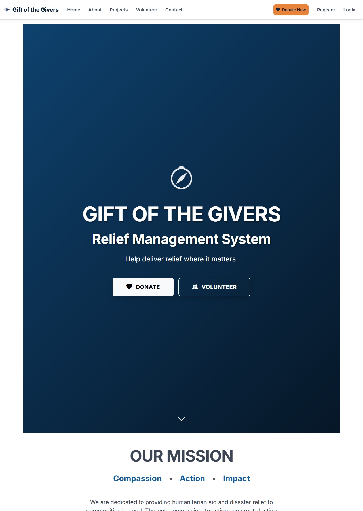
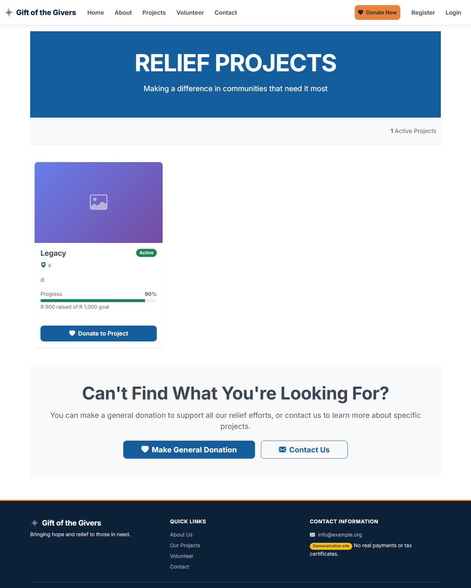
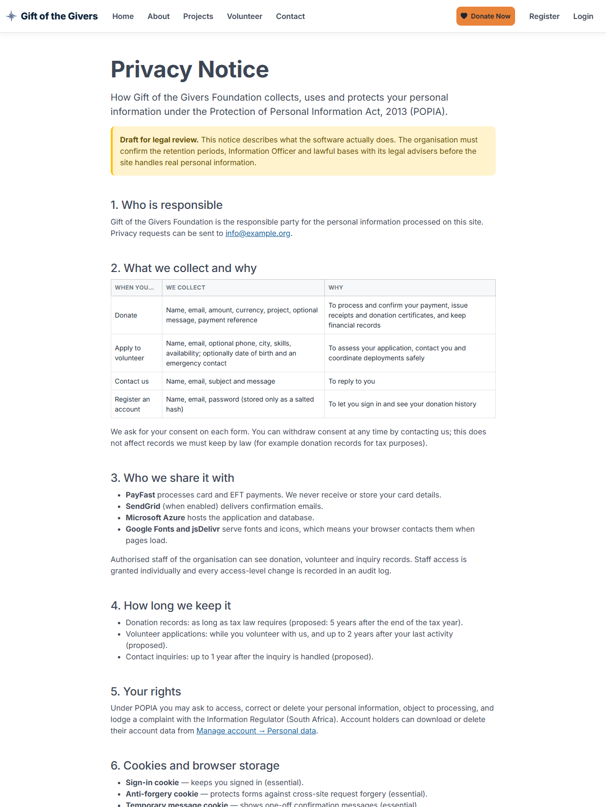

Design Brief
Visual identity, components, content rules and accessibility requirements, documented from the implemented design system.
1. Design goals
- Trust first. Donors give money to a cause they cannot see. Every screen must look credible and say exactly what will happen. In particular, payment state is always explicit: Awaiting payment, Paid, Failed.
- Urgency without manipulation. Strong calls to action ("Donate Now") but no fake counters, invented statistics or dark patterns.
- Mobile first for the public. Most visitors arrive from social media on phones. The donate form must work one-handed on a 390 px screen.
- Calm, efficient staff tools. Dense tables, clear filters, confirmations for destructive actions, nothing decorative.

2. Brand tokens
All tokens live in GiftOfTheGivers/wwwroot/css/site.css (:root) and override Bootstrap 5 variables. Do not hard-code colours in views; use the tokens or Bootstrap utilities mapped to them.
Primary
#155E9E · links, primary buttons, headers
Primary dark
#0F4676 · hover, emphasis
Navy
#0A2138 · footer, hero gradient
Accent
#E8833A · Donate Now, highlights
Primary subtle
#E7F0F8 · tints, table heads
Ink
#1B2430 · headings
Body
#3C4655 · body text
Muted
#6B7684 · secondary text
Success
Bootstrap green · Paid, approved
Warning
Bootstrap amber · Awaiting payment, test mode
| Token | Value |
|---|---|
| Font | Inter (Google Fonts) with a system fallback stack; weights 400–800 |
| Radius | 0.375 / 0.55 / 0.85 / 1.1 rem (sm / default / lg / xl) |
| Focus ring | Primary at 25% opacity (Bootstrap focus ring) |
| Breakpoints | Bootstrap defaults; custom rules at ≥ 768 px |
Contrast (measured, WCAG 2.x formula): primary #155E9E on white 6.72:1, body #3C4655 on white 9.55:1, muted #6B7684 on white 4.62:1 — all pass AA for normal text. White text on the accent #E8833A is 2.71:1 and fails AA even for large text (3:1). Ink text #1B2430 on the accent is 5.77:1 and passes, so the Donate Now / accent buttons now use ink text, with a lighter hover (#F09A5C, 7.07:1). This fixed design debt item D-03 during remediation.
3. Typography
| Use | Style |
|---|---|
| Page hero titles | display-3/4, uppercase, bold, white on primary band |
| Section titles | h2–h3, ink colour |
| Body | 1rem Inter, body colour, line-height ~1.6 |
| Data and references | Monospace (font-monospace, <code>) for transaction references |
| Money | Always through Money.Format / Money.Zar: "R 1,234.50", "$ 75.00", "€ 10.00". Never culture-dependent ToString("C") |
4. Layout
- Public pages: full-width coloured hero band, then content centred in
containerwith max ~8 columns for forms (col-lg-6for the donate form), and a dark navy footer with three columns. - Staff pages:
container my-5with page title, lead sentence, filter pills or tabs, a summary card, then a responsive table (table-responsive) and the pager. - Grid: Bootstrap 12 columns. Cards use
shadow-sm(staff) andshadow-lg(primary public forms).
5. Components
| Component | Use | Rules |
|---|---|---|
| Primary button | Main action per screen | One per form. Labels state the result: "CONTINUE TO PAYMENT", not "Submit" |
| Donate Now (accent) | Global navigation | Always visible; links to /Home/Donate; ink text on orange for contrast |
| Payment status badge | Anywhere a donation is shown | _PaymentStatusBadge: Paid (green), Awaiting payment (amber), Failed (red). Never infer status from other fields |
| Flash messages | After POST-redirect-GET | _StatusMessages in the layout, role="status", dismissible |
| Validation summary | Every form | asp-validation-summary="All" with role="alert"; hidden when empty (.validation-summary-valid) |
| Consent checkbox | Every form collecting personal data | Links to the privacy notice; required on the server |
| Pager | Staff lists | _Pager: Previous/Next, "Page x of y · n records" |
| Confirmation | Destructive staff actions | data-confirm="…" on the button (handled in site.js). Never inline JavaScript with user data |
| Impact stats | Home and About | ImpactStats view component (band or cards); always labelled "Live figures from this system" |
| Demo badge | Footer, certificates | Shown while Organisation:IsDemo is true |
6. Content rules
- No invented numbers. Statistics come from the database or are removed. Narrative examples are labelled illustrative.
- No borrowed identity. Contact details, registration numbers and PBO references come from configuration. Placeholders show "Not configured" instead of fake values.
- Say what happens next. Before payment: "You will be sent to PayFast… No real money is taken (test mode)." After payment: the actual status.
- Plain language at about a Grade 8 reading level; sentence case for body text; uppercase only for hero titles.
- Monthly pledge, not "recurring donation", until automatic billing exists.
7. States
| State | Pattern | Example |
|---|---|---|
| Empty | Neutral alert-info with what to do next | "No donations match this filter." |
| Loading | Server-rendered pages; no spinners needed. Long actions (PDF) open as downloads | — |
| Success | Green flash, or a receipt with a green check | Paid receipt |
| Pending | Amber hourglass and "Awaiting payment" | Receipt before the ITN arrives |
| Error (validation) | Summary at top + field messages | Donate form |
| Error (server) | /Home/Error with request id (production) | — |
| Forbidden | Identity Access Denied page | Donor opening a staff page |
8. Accessibility requirements (WCAG 2.2 AA target)
| Requirement | Implementation |
|---|---|
| Labels for every input | asp-for labels; radio groups wrapped in fieldset + legend |
| Errors announced | Validation summary has role="alert"; flash messages have role="status" |
| Keyboard | Native controls only; visible focus ring from Bootstrap |
| Icons | Decorative icons have aria-hidden="true"; icon-only buttons have visually hidden text |
| Live region | Rand equivalent on the donate form uses aria-live="polite" |
| Motion | Intro animation honours prefers-reduced-motion and has a Skip button |
| Tables | scope="col" headers on staff tables |
| Language | lang="en" |
Not yet verified with assistive technology or automated tools. An axe and Playwright suite is in the implementation plan (T-2.5).
9. Screens


10. Design debt
| ID | Item | Proposal |
|---|---|---|
| D-01 | Inline styles and scripts in several views | Move to site.css / site.js (also enables a strict CSP) |
| D-02 | Hero bands use bg-primary with large uppercase headings on every page | Reduce on staff pages to save vertical space |
| D-03 | ~~White text on the accent button (2.71:1)~~ | Fixed: ink text (5.77:1), lighter hover (7.07:1) |
| D-04 | Staff tables on phones scroll horizontally | Card layout for narrow screens |
| D-05 | Fonts and icons come from third-party CDNs | Self-host (privacy, reliability) |